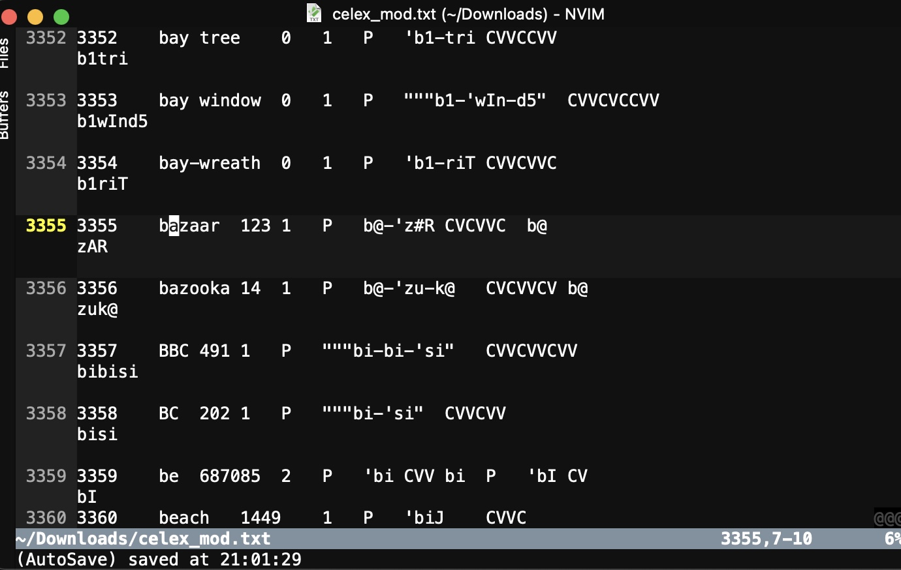
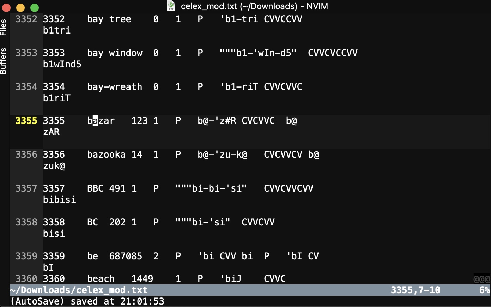

Finding and Collecting Data
Data formatting
Organizing Data Storage
How to design a data pipeline
Handling Sensitive data and Encryption
Data Compression
Validating Data and Hashing
What are examples of found data?
Downloaded datasets from online
Other folks’ data given freely
Pre-aggregated statistics and data
Existing Databases
Existing corpora
Keep records of date-of-acquisition and source/url
Preserve or note original filenames
If you take a subset or remove unnecessary data, keep the script(s) which did so
Changes to data could be an actual legal liability for you, so be careful
Think forensically, and maintain a chain of custody
You might want to use hashing, which we’ll discuss later
Are you naming your files reasonably?
Are you collecting the data in easy-to-ingest formats?
Are you anticipating the cleaning and processing you’ll have to do?
What metadata do you need?
How are you backing your data up?
Where does the data live, and how is it organized?
Use ‘tidy’ formats which are easy to analyze and visualize
Use lowercase column, identifier, and category names without whitespaces or special characters
The closer to base ASCII you are, the better
Avoid punctuation and whitespace
No initial numbers
Code logical variables with numeric 0 and 1
ISO Date/Time (2022-09-05T09:25:22.317640-07:00)
.wav for audio, mp4 for video (with care paid to codecs)
csv or tab-delineated (tsv) for tabular
.txt or .md or .tex for text, using UTF-16 where you can
Image formats are mostly good-to-go, but jpg, tiff, and png are great
Avoid proprietary formats which require specific software to open
There should be one place where a given file should be
Like files in like folders
Use version control to manage changes, not folder copies
It’s very easy to combine a folder full of csv files into a single larger dataframe with a for loop
Keep things in one place for easy backup
Use meaningful filenames which you can
filename.split("_") later
exp1_control_p26_bend_airflow.wav
Consistent naming schemes make life easier
“I know we didn’t collect a participant 87, as it would have been in this folder”
You’re helping future researchers to reproduce your analysis
You’re helping your future self too!
Organized data is easier to put into…
Sometimes, you’ll need to create additional metadata
Sometimes, you’ll need additional analyses to feed into your final goal
Sometimes, you’ll need to pre- or post-process the data
Sometimes, your analysis will have many steps involved
Data annotation
Data post-processing
Derived Data Creation
Data format conversion
Dimensionality Reduction and Clustering
Server-side computes
World-class ML and Stats are available in one place
Libraries exist for working with audio, text, and images
NLP tools are absolutely available
Python is server-side run friendly
This is part of the reason we’re teaching you python
Goes from ‘raw’ to ‘ready for publication’ (in enough time)
Hooray for stateless analysis!
Different tools which don’t play nice with others (e.g. ArcGIS, MATLAB)
Different toolkits with one specific analysis you need
Compute times that are too large to run everything repeatedly
Loads split across different machines
Multi-person workflows
Having multiple humans working on the same data
What can this look like?
Why would you do this?
Document the process well
“First, data goes into MATLAB, turning the raw position data into a matrix of X, Y, Z, pitch, roll, yaw by time coordinates…”
Every project should come with a lab manual
Use scripts rather than GUI-based processing, and keep all the scripts used together in one place
Use lots of ‘if this file exists, skip this step’ commands to make sure you can delete everything but the raw data
Put expensive steps early in the pipeline if you can so they get re-run less often
Use the same, interoperable formats between steps
Clearly store intermediate or derived forms of data
Write every step to be run as a batch, across all the data
Consider making a mega-script to run the sub-steps all in order, if that makes sense
“Wait, did I actually do all the processing for this particular person’s data?”
“Oh no, I don’t remember which scripts we ran in which order!”
“We forgot a participant, but re-processing all the data would take a week”
“Uh, sorry, I just realized I exported all the position data from MATLAB without doing the correction step, can you re-run with these files?”
“Hey, can we fly you back out here to train your replacement’s replacement? The last guy left a mess, and we don’t know how he was processing the data.”
Make your entire analysis reproduce from code with one click
If you can’t do that, make it reproduce from a small number of well-documented clicks
If you can’t do that, document the heck out of every single click required so that it’s easy to re-do later
Doing otherwise hurts Will where he’s quite sensitive
What kinds of data are freely shareable?
What kinds of data are sensitive temporarily?
What kinds of data are always sensitive?
“Do I have to video record sessions?”
“Can we blur participant faces in saved interview recordings?”
“Should I save the audio, or just transcripts?”
“We don’t really need to keep phone numbers or birthdates, right?
“Do I need a document linking names to participant IDs?”
Store identifiers rather than names
‘Bin’ the data such that ‘birthday’ becomes ‘30-35’ and ‘La Jolla’ becomes ‘Southern California’
Remove or replace other potentially identifying data.
Ask for proxy data
“On $DATE, we visited $CITY. The Eiffel tower was so beautiful lit up for Christmas.”
“During the interview, 324ef2a described why he hates when people call him”Wliliam”, and prefers 45ce78f instead.”
“Mr. 238d4f indicated that as the Pastor of a Seventh Day Adventist church near his hometown of Ann Arbor, he must keep his homosexuality secret.”
“In these anonymous location data, find all people who spend 8 hours daily near PEB 425 on weekdays starting on July 25th but not on Sep 5th, who go to Vons in UTC regularly, and who remained on campus until 5:30 on Monday Sep. 12th. Show me all addresses in which they overnight.”
De-Identified Data can be re-identified, so think like an attacker would
Personally Sensitive Data can cause financial, social, or physical harm to individual people if in the wrong hands
Organizationally Sensitive Data can cause financial, reputational, or practical harm to a company, group or institution if in the wrong hands
Some data can be both!
Medical records (HIPAA)
Educational Recrods (FERPA)
Qualitative data with identifying and socially meaningful information (e.g. interviews)
Sensitive financial, locational, and identity information (ID theft, doxxing, (cyber)stalking)
Data which can link people to activities they’d rather keep anonymous (e.g. screen names linked to phone numbers, cryptocurrency wallet purchase records)
What else?
Data describing audits or investigations in progress
Data which would be valuable to a competing entity (e.g. sales data, R&D budget, upcoming product performance)
Data which provides insider information (e.g. upcoming sales figures, information about a recall)
Code or data which constitute ‘trade secrets’ or ‘secret sauce’
Data protected by privacy policies or data-use agreements
Data with constraints placed by an institutional review board
Classified Governmental Data
What else?
Identities of spies or domestic violence survivors in an organization’s network
User data of apps targeted at LGBTQ+ individuals
Library records
User collected phone data
Companies/Organizations/Governments break down
Time gated data (e.g. earnings or audit reports)
Programs can be declassified
Proprietary technology can leak or become irrelevant
… but personal data is more or less permanently sensitive
Centralize the data, and work on the remote server via SSH/VNC over VPN
Designate specific folders for sensitive data, and remove them from local backups
Create code and annotations in a format that doesn’t include any of the raw data
References to columns and anonymous identifiers, rather than names
References to character offsets rather than text (e.g. ‘characters 30-45 in MED_DOC_1342 are a medication’)
What else?
Use long, high-entropy passphrases and a password manager
Encrypt the data on your computer and use a locking code on your phone
Use a VPN if you’re connecting via sketchy wifi/ethernet
Keep your computer up to date
Don’t save anything sensitive ‘to the cloud’
If you must transfer files online, only transfer encrypted files
‘Trap door’ functions are hard only in one direction
Prime Factorization is a good example
‘This number is the product of two very large prime numbers, what are they?’
Extremely expensive to calculate prime factors
Extremely easy to confirm that you’ve got the correct answer
Your passphrase is used to generate a key which is a large number in a trapdoor function
AES-256 uses 256 bit numbers to do this math
115,792,089,237,316,195,423,570,985,008,687,907,853,269,984,665,640,564,039,457,584,007,913,129,639,935 is the largest 256 bit number
You would need to try a lot of numbers (2^255 keys) to get the answer
If every computer on Earth worked together to crack an AES 256 key, it would take approximately 13,668,946,519,203,305,597,215,004,987,461,470,161,805,533,714,878,481 years (Source)
Not perfectly secure, but damned close
Use your OS’s built-in encryption as a base layer (e.g. Bitlocker, Filevault, Luks)
Use gocryptfs for anything which shouldn’t be
unlocked when your computer is
Tools like Restic or Borg with rclone allow for ‘zero knowledge’ backups
Encryption can cause irrevocable data loss if you forget your key
You move on
The folders just never get opened again (😭 )
What do you do with all the data?
Option 1: Just leave it on your hard drive
Option 2: Compress it on your hard drive
Option 3: Store it elsewhere
Easy to get at the data later if you need them
Data becomes searchable on your computer
Data takes up lots of space on your machine
Easy to accidentally modify the data
Data is searchable on your computer (even when you don’t want to)
“How can I more cleverly store these files while retaining all the information, even if it takes some computing time to decompress later?”
Dictionary-based coding
Good algorithms are gzip (.gz) and zstd
(.zst)
This is lossless compression, so don’t worry about it
This turns a folder into a single file, for later use
“Store the files and their structure in a monolithic file”
tar is the best implementation of this
Archiving isn’t necessarily compression
zip do both!Also valuable for encrypting files
Install zstd and tar
zstd myfile.txt and
zstd -d myfile.txt
tar --zstd -cf directory.tar.zst directory/
tar --zstd -xf directory.tar.zst to
decompress
folder.tar.zstIt’s just one file you have to worry about
You can extract everything again later
… and it takes up much less space
Easier file management, transfer, and storage
Much less space required
You don’t need to worry about accidentally changing or deleting files
If that one file gets deleted or corrupted, you have a problem
Harder to search through the archive or ‘just grab something’
Or consider uploading it to a university or public data repository!
… but how do you know if your 12GB tar.zst was corrupted during upload?
How can you be sure that two archives called
mydata.tar.zst are really the same thing, or that your file
isn’t corrupt?
How can you give a set of changes in a git repository a guaranteed-to-be-unique name?
How can you make sure that a document which has been digitally ‘signed’ hasn’t been modified since the signature?
How can I confirm that the password somebody entered is the same one they set up without storing the password?
Take an input data array of arbitrary length and turn it into a unique output of a fixed length ()
The same data will always produce the same hash
Data which is different, even only by a bit, produces an uncorrelated hash
It is a one-way function, and you can’t regenerate the original input or easily generate an input which has a particular hash
‘Hash Collision’, when two files have the same hash and different contents, is also avoided
Common ones include the SHA family (SHA-N),
BLAKE3, and md5
Strings and numbers can be hashed together or apart
File hashes use the entire contents of a file to generate a single unique string
Passwords hashes generally include a ‘salt’ chunk of secret data alongside the user password, making it expensive to guess and impossible to spot password reuse
storedpass = sha256(secretsalt+userpass)Identifier hashes turn sensitive information into anonymous labels in a way which allows only the researcher to confirm that data belongs to a particular person
idhash = sha256(firstname+lastname+secretsalt)sha-256 is a well known, secure hashing
algorithm
Celex is a 5mb lexical resource with 5,042,831 characters
I’ll remove one character


~ % sha256sum celex.txt
73e585cdafecf42caf7dc4e96dbec07d69b02e696482fc8709c9a293319ebbb5 celex.txt
~ % sha256sum celex_mod.txt
c036d295123c827950bf36db2f1044e66afe07a66683bec51708dae024a85947 celex_mod.txt“Do I have any duplicate files on this system?”
“Are these two stored analyses really the same?”
“I just moved this important archive to a new computer via a sketchy connection, is it still intact?”
“Is the version of the program I downloaded really the same as the one the developers ‘signed’”
You can get much shorter, less secure hashes
(e.g. md5) if you need less guaranteed collision resistance
or need the hash to be smaller
Generally, SHA-3 with N > 256 isn’t a bad plan
This will be weirdly useful to you
Finding and collecting data are different, but both have problems
Sane data formats are important
Data often has multi-step pipelines which you should be mindful of
Sensitive data are important to be careful with
Data can be stored as-is, archived, or compressed
Hash algorithms let you check data integrity and do lots of other useful things